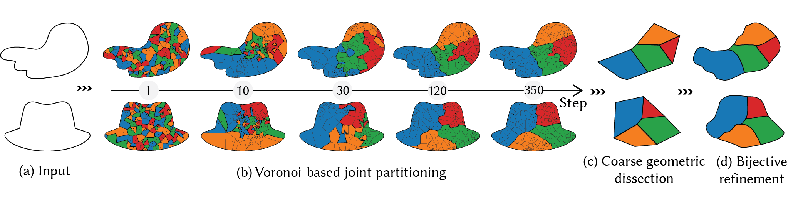
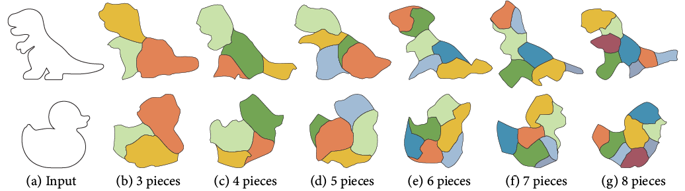
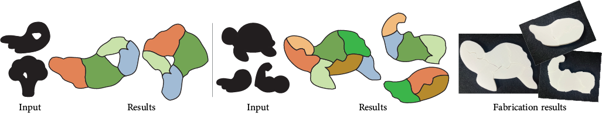
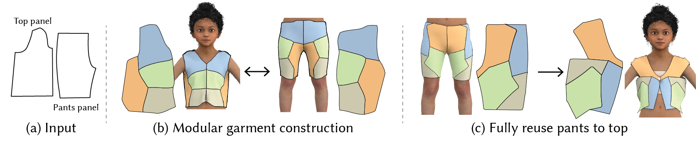
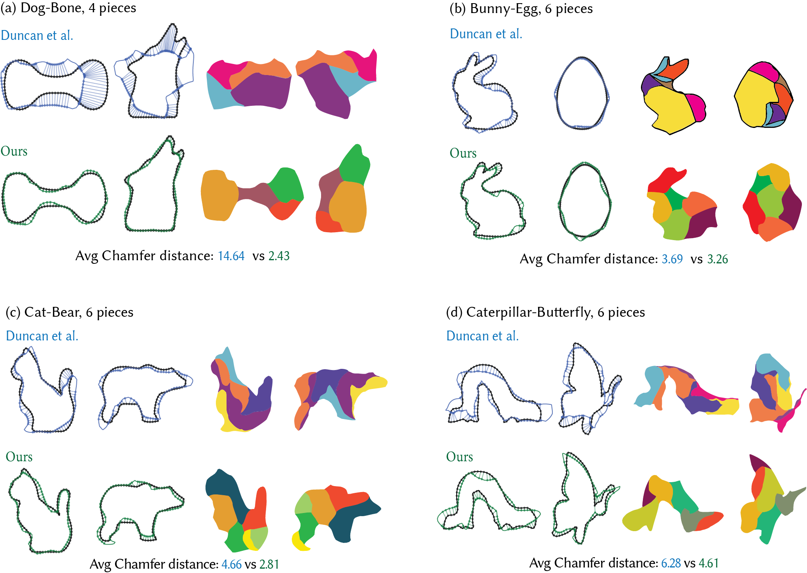

Voronoi Scissors:
Approximate Dissection of 2D Shapes
with Continuous Optimization
One set of pieces. Two completely different shapes. (Conditionally accepted to Siggraph Asia 2026)
1The University of Tokyo
2Centre Inria d’Université Côte d’Azur
3University of Technology Sydney
4Université de Montréal
Reconfigure
More exaples: Same pieces, different shapes.
Method
From Voronoi cells to a common dissection.

Voronoi-based joint partitioning (b)
More results on Voronoi-based joint partitioning
Results
A gallery of dissections
The formulation supports different piece counts as well as shapes with holes and disconnected components.
Different piece numbers: 3 → 8 pieces

Topology: input shapes with holes
One shape to two shapes

More applications
Material reuse
The same reconfiguration principle can also support reuse-oriented design scenarios.
Modular design
Zero-waste garment upcycling

Comparision with existing works
Comparison

Reference
BibTeX
@inproceedings{Qi2026voronoiscissors,
title = {Voronoi Scissors: Approximate Dissection of 2D Shapes with Continuous Optimization},
author = {Qi, Anran and Pietroni, Nico and Bessmeltsev, Mikhail and Umetani, Nobuyuki and Bousseau, Adrien and Igarashi, Takeo},
booktitle = {SIGGRAPH Asia 2026 Conference Papers},
year = {2026}
}